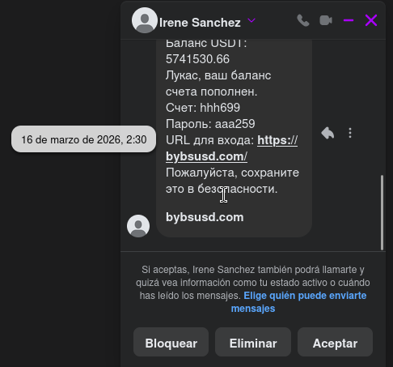
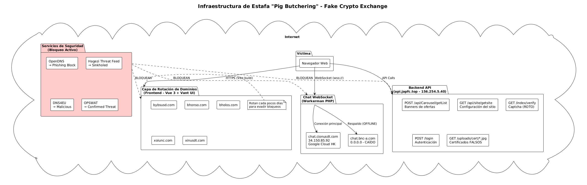
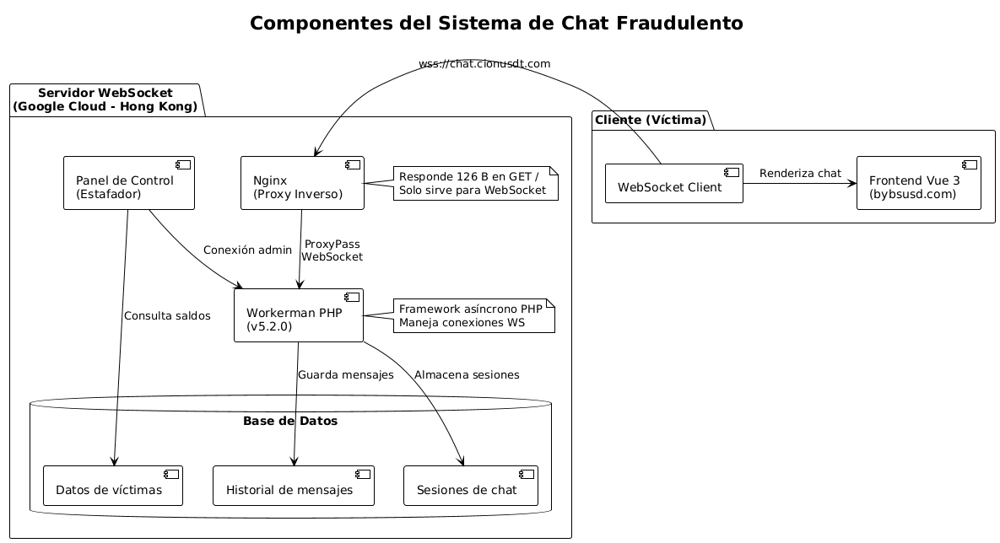
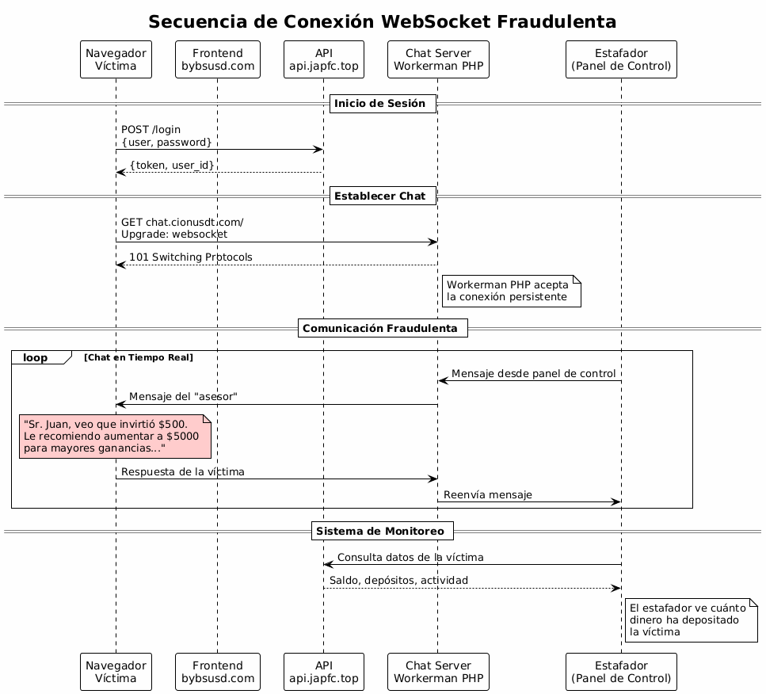
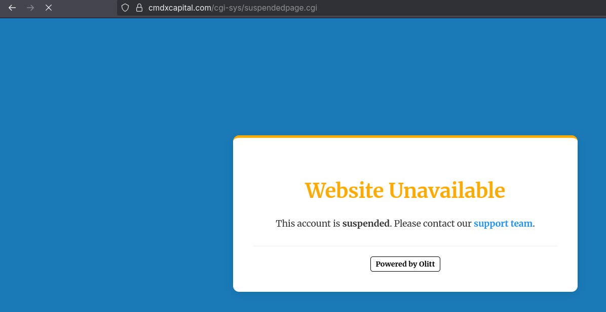
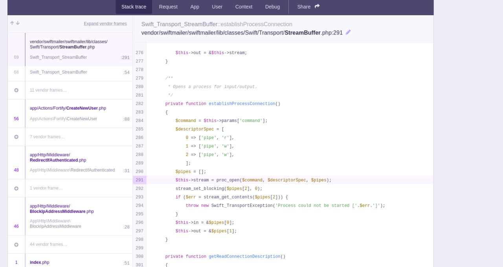
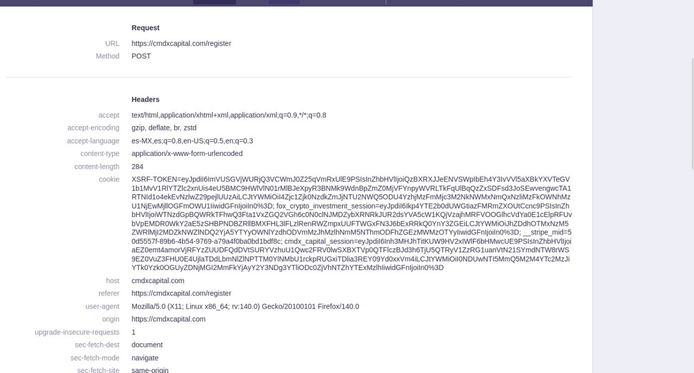
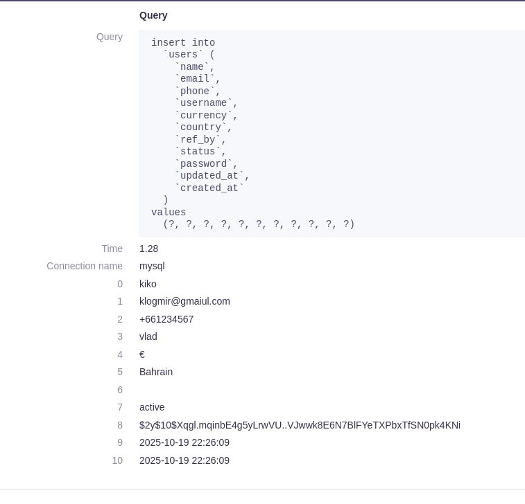
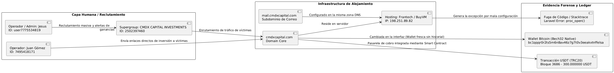
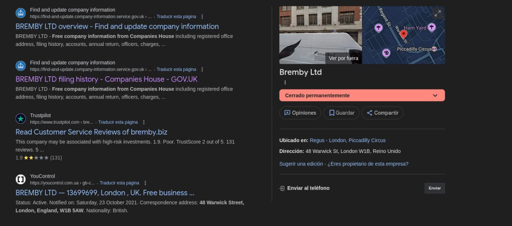

1. Resumen Ejecutivo
Se ha identificado y analizado una red de estafa tipo "Pig Butchering" que opera una plataforma falsa de intercambio de criptomonedas dirigida a usuarios hispanohablantes. La infraestructura utiliza rotación rápida de dominios para evadir bloqueos, WebSocket con Workerman PHP para chat fraudulento en tiempo real, y una API que expone claves de validación de captcha al cliente.
La red está compuesta por al menos 7 dominios alojados en Google Cloud Platform (Hong Kong/Singapur), de los cuales 3 ya están bloqueados por múltiples servicios de threat intelligence (OpenDNS, Hagezi Threat Feed, DNS4EU, OPSWAT).
Clasificación: MALICIOSO - Red de estafa activa
Fecha del informe: 2026-05-26. La infraestructura sigue operativa con dominios rotativos. Se recomienda bloqueo inmediato de todos los IoCs listados en este artículo.
2. Pig Butchering: El Contexto Global de una Epidemia
El término "Pig Butchering" describe una modalidad de estafa donde la víctima es "engordada" durante semanas o meses antes del sacrificio financiero. A diferencia de otros fraudes, aquí el estafador invierte tiempo en construir una relación de confianza con la víctima a través de mensajes no solicitados, conversaciones persistentes y la promesa de inversiones altamente rentables en criptomonedas.
Según el informe del FBI de 2024, las estafas de inversión en criptomonedas representaron pérdidas superiores a 3.900 millones de dólares en Estados Unidos, siendo el Pig Butchering la categoría de mayor crecimiento. El Departamento de Justicia de EE.UU. ha desmantelado operaciones que utilizaban infraestructura en el sudeste asiático, donde complejos enteros operan como fábricas de estafas con personal traficado y forzado a ejecutar estos esquemas. En 2025, Europol coordinó la Operación Dogger, que resultó en la detención de más de 200 personas vinculadas a redes de Pig Butchering que operaban desde Camboya, Laos y Myanmar, con pérdidas estimadas en más de 400 millones de euros solo en Europa.
La FTC reportó que en el primer semestre de 2024, las pérdidas por task scams y estafas de inversión alcanzaron los 220 millones de dólares solo en Estados Unidos, con un patrón consistente: pequeños pagos iniciales para generar confianza, seguidos de una exigencia de "inversión" que nunca se recupera. En 2023, el Departamento de Justicia de EE.UU. incautó más de 112 millones de dólares en criptomonedas vinculadas a esquemas de Pig Butchering, en una de las mayores confiscaciones de activos digitales relacionadas con fraudes de inversión hasta la fecha.
Este caso guarda paralelismos directos con la investigación que documenté anteriormente sobre la red de estafa piramidal global mapeada con VirusTotal, donde un número sudafricano iniciaba el contacto ofreciendo trabajos de clasificación de hoteles. En aquella ocasión, la infraestructura de los estafadores también se alojaba en Hong Kong, utilizaba exchanges falsos y reciclaba plantillas sin ofuscar. La metodología de OSINT y mapeo de infraestructura que desarrollé en ese caso —documentado en detalle en la Threat Hunter Recollection— es exactamente la que apliqué aquí. La diferencia es que esta red de Pig Butchering es más sofisticada técnicamente: tiene rotación de dominios automatizada, WebSocket en tiempo real y una API que, irónicamente, está peor asegurada que la de los task scams.
Conexión con Investigaciones Previas
Este análisis es la continuación directa de la metodología que apliqué en el mapeo de la red de estafa piramidal. En aquel caso, los estafadores operaban con task scams y un falso exchange llamado VCIMP. En este, utilizan Pig Butchering con un exchange llamado bybsusd.com. En ambos casos, la infraestructura está alojada en Hong Kong, los certificados son falsos, y el código fuente revela más de lo que los atacantes creen. Si no has leído esa investigación, está completa en la Threat Hunter Recollection. La misma pereza operacional —dejar fugas de información por malas configuraciones— es la que documenté en el caso cmdxcapital, donde un appDebug:true en Laravel expuso consultas SQL y tokens del servidor.
3. Fase 1: Captación — El Mensaje Inicial
Todo comienza con un mensaje no solicitado. En este caso, la captura evidencia el primer contacto recibido a través de Facebook Messenger el 16 de marzo de 2026 a las 2:30. El remitente es un perfil con el nombre hispano "Irene Sanchez", una identidad probablemente falsa o comprometida para generar confianza inicial.

El texto del mensaje, escrito en ruso a pesar del nombre en español del perfil, contiene todos los elementos del anzuelo:
- Balance USDT: 5,741,530.66 — Una cifra astronómica para disparar la codicia o la curiosidad.
- "Lucas, el balance de su cuenta ha sido recargado" — El uso de un nombre específico sugiere una campaña masiva con plantillas semiautomatizadas.
- Credenciales preconfiguradas: Cuenta hhh699, Contraseña aaa259.
- URL de acceso: https://bybsusd.com/ — El dominio que coincide exactamente con la infraestructura analizada.
Táctica de Ingeniería Social
El mensaje combina varios disparadores psicológicos: una suma de dinero enorme (codicia), credenciales "exclusivas" (sentido de oportunidad única), y un tono formal bancario ("Por favor, guarde esto de forma segura"). La víctima no necesita registrarse: ya tiene una cuenta "precargada" esperándola. Solo tiene que iniciar sesión.
4. Infraestructura Técnica de la Estafa
Arquitectura General
El siguiente diagrama detalla la arquitectura técnica global utilizada por los ciberdelincuentes y cómo interactúa la víctima con cada componente, así como los servicios de seguridad que intentan mitigarla.

Frontend: Vue 3 + Vant UI + Vite
El frontend está construido con Vue 3 usando Vite como bundler y Vant UI como librería de componentes móviles. El código está ofuscado y dividido en múltiples chunks. Los módulos específicos de la estafa revelan todas las funcionalidades del exchange falso:
- financial-CPeXl-Vn.js — Planes de inversión falsos.
- kline-j6UyA4Q3.js — Gráficos de velas (trading falso).
- vip-B8AdYRya.js — Sistema VIP piramidal.
- invite-g2xk1CV9.js — Sistema de referidos.
- recharge-CWI3W1iR.js — Depósitos de criptomonedas.
- withdraw-B3IhVFcd.js — Retiros (NUNCA procesados).
Backend API: api.japfc.top
El núcleo lógico de la estafa reside en api.japfc.top (IP 156.254.5.40). Los endpoints descubiertos incluyen:
- POST /api/Carousel/getList — Banners de ofertas falsas.
- GET /api/site/getsite — Configuración del sitio fraudulento.
- POST /login — Autenticación de víctimas.
- GET /uploads/cert/*.jpg — Certificados falsos para simular legitimidad.
- GET /index/verify — Sistema de Captcha (VULNERABLE).
Vulnerabilidad Crítica: Captcha Roto
El endpoint /index/verify devuelve tanto la imagen del captcha como la clave de validación en la misma respuesta:{"img": "data:image/jpeg;base64,...", "captcha_key": "abc123..."}. La clave de validación viaja al cliente, permitiendo ataques de replay, bypass del captcha y reutilización de tokens. El backend externaliza la validación y confía en la clave que el propio cliente le devuelve. Este patrón de validación delegada al cliente es el mismo error de autorización que documenté en la auditoría a la Web API financiera con IDOR por validación incompleta de JWT: el backend confía en lo que el cliente le devuelve sin verificarlo.
5. Sistema de Chat WebSocket Fraudulento
El chat en tiempo real es el componente clave para la manipulación psicológica de la víctima. Utiliza Workerman PHP v5.2.0, un framework asíncrono legítimo, sobre Nginx como proxy inverso en Google Cloud Hong Kong.


El flujo es quirúrgico: la víctima inicia sesión, recibe un token, y establece una conexión WebSocket persistente. El estafador, desde su panel de control, monitorea en tiempo real el saldo y los depósitos de la víctima para ajustar su discurso de ingeniería social. El mensaje típico: "Sr. Juan, veo que invirtió $500. Le recomiendo aumentar a $5000 para mayores ganancias..."
Esta técnica de manipulación en tiempo real mediante WebSocket es una evolución directa de lo que documenté en la Threat Hunter Recollection con los task scams operados desde Sudáfrica. En aquel caso, la comunicación era asíncrona por Telegram. Aquí, los estafadores implementaron un canal persistente que les permite ver en tiempo real cada acción de la víctima sobre la plataforma. La sofisticación técnica es mayor, pero el patrón de ingeniería social es idéntico: generar confianza, mostrar ganancias ficticias, y bloquear el retiro.
6. El Ciclo Completo de la Estafa

El diagrama de secuencia ilustra las cuatro fases cronológicas del ciclo de vida de la estafa. La víctima pasa de recibir un mensaje no solicitado a depositar criptomonedas reales en una plataforma que nunca le permitirá retirar. Cuando intenta hacerlo, el sistema exige el pago de supuestos "impuestos o comisiones". Una vez consumado el robo, los estafadores desaparecen y rotan la infraestructura a un nuevo dominio.
7. Indicadores de Compromiso (IoCs)
Dominios Maliciosos
| Dominio | IP | Ubicación | Estado |
|---|---|---|---|
| bybsusd.com | 156.254.5.40 | Hong Kong | Bloqueado |
| api.japfc.top | 156.254.5.40 | Hong Kong | Bloqueado |
| chat.cionusdt.com | 34.150.85.92 | Hong Kong | Bloqueado |
| chat.bnc-a.com | 0.0.0.0 | - | Caído |
| bhonso.com | 156.254.5.40 | Hong Kong | Activo |
| bholos.com | 34.150.85.92 | Hong Kong | Activo |
| xoiunc.com | 156.254.5.115 / 34.142.203.77 | Hong Kong / Singapur | Activo |
| xinusdt.com | 34.87.125.55 | Singapur | Activo |
IPs Maliciosas
156.254.5.40 → bybsusd.com, api.japfc.top, bhonso.com
34.150.85.92 → chat.cionusdt.com, bholos.com
156.254.5.115 → xoiunc.com
34.142.203.77 → xoiunc.com
34.87.125.55 → xinusdt.comEndpoints Maliciosos
api.japfc.top/api/Carousel/getList → Banners de ofertas falsas
api.japfc.top/api/site/getsite → Configuración del sitio fraudulento
api.japfc.top/index/index/verify → Captcha con fuga de claves
api.japfc.top/index/login → Autenticación de víctimas
api.japfc.top/uploads/cert/ → Certificados falsos (jpg)
chat.cionusdt.com/ → WebSocket para chat fraudulento8. Sistema de Rotación de Dominios
La red emplea rotación rápida de dominios para evadir bloqueos. El patrón identificado muestra 4 dominios en 22 días:
2026-05-04 → xinusdt.com (Singapur)
2026-05-08 → bholos.com (Hong Kong)
2026-05-17 → bhonso.com (Hong Kong)
2026-05-20 → xoiunc.com (Hong Kong/Singapur)
2026-05-26 → bybsusd.com (Hong Kong)Los nombres son semi-aleatorios (byb, bhon, bhol, xoin, xin) pero todos terminan en usd o usdt para asociarse con criptomonedas. Las IPs rotan entre Hong Kong y Singapur, pero el backend (api.japfc.top) permanece constante, siendo el eslabón más débil de la infraestructura.
9. Estado de Detección y Bloqueo
| Servicio | bybsusd.com | api.japfc.top | chat.cionusdt.com |
|---|---|---|---|
| OpenDNS | Phishing Block | Phishing Block | Phishing Block |
| Hagezi Threat Feed | Sinkholed | Sinkholed | Sinkholed |
| DNS4EU | Malicious | Malicious | Malicious |
| OPSWAT | - | - | Confirmed Threat |
10. Recomendaciones
- Bloquear todos los IoCs listados en firewalls, proxies y DNS filtering.
- Monitorear conexiones salientes hacia las IPs 156.254.5.40, 34.150.85.92 y el rango de Google Cloud Hong Kong/Singapur.
- Reportar nuevos dominios que sigan el patrón [4-5 letras]usd[t].com a servicios de threat intelligence.
- No interactuar con ninguno de los dominios listados ni depositar criptomonedas en plataformas no verificadas.
- Desconfiar de ofertas de inversión no solicitadas recibidas por mensajería o redes sociales.
Para Investigadores
El backend api.japfc.top es el punto más estable de la infraestructura. Monitorear sus certificados SSL, nuevos dominios apuntando a la misma IP, y cambios en los endpoints puede revelar nuevos dominios de la campaña antes de que sean utilizados activamente. Esta técnica de pivoting sobre infraestructura es la misma que apliqué en el mapeo de la red de estafa piramidal documentado en la Threat Hunter Recollection. La metodología de infraestructura ofuscada que utilizo para este tipo de investigaciones —desde un entorno blindado con WireGuard y proxy residencial— está documentada en la guía de túnel ofuscado.
/¿Te interesa el threat intelligence aplicado a fraudes financieros?
Esta investigación es parte de una serie de casos reales de threat hunting que abarcan OSINT, ingeniería inversa de malware y deconstrucción de infraestructura criminal. Cada caso revela un patrón: la pereza operacional del adversario es la mejor aliada del cazador.
Threat Hunter Recollection → Operación FakeWealth → Campañas de Phishing →11. Referencias
- Threat Hunter Recollection — Crónica de cinco investigaciones reales de threat hunting (tty503.com)
- Operación FakeWealth: Inteligencia de Amenazas sobre cmdxcapital (tty503.com)
- Pentesting a Web API Financiera: IDOR por Validación Incompleta de JWT (tty503.com)
- Infraestructura Ofuscada: WireGuard sobre TCP Falso + Proxy Residencial (tty503.com)
- Workerman — Framework PHP asíncrono (GitHub)
- Vant UI — Librería de componentes Vue 3
- MITRE ATT&CK T1665 — Pig Butchering
- FBI IC3 2024 Internet Crime Report — $16 billion in reported losses, crypto investment fraud identified as top threat
- DOJ Seizes Over $112M in Funds Linked to Cryptocurrency Investment Schemes (Pig Butchering) — April 2023
- DOJ Seizes Nearly $9M in Crypto from Pig Butchering and Romance Scams — November 2023
- TRM Labs Analysis: FBI 2024 IC3 Report — $9.3 billion in crypto fraud losses, 66% increase from 2023
Continuidad. Y una fuga que solo hacia falta que el modo depuracion quedara activo.
12. Resumen de Inteligencia
La Operación FakeWealth es una campaña de fraude financiero que opera bajo la marca cmdxcapital.com. Este artículo documenta el ciclo completo de inteligencia de amenazas aplicado sobre esta red: desde la identificación de infraestructura y el mapeo de dominios satélites hasta la correlación de wallets en blockchain, la atribución por reutilización de plantillas y la explotación de fallos de OpSec para extraer inteligencia del backend.
El enfoque principal es la inteligencia de amenazas: cómo pivotar sobre indicadores de red, cómo leer los errores de configuración del adversario como fuente de inteligencia, y cómo conectar los hallazgos técnicos con el ecosistema más amplio de fraudes financieros documentados en la Threat Hunter Recollection. Las vulnerabilidades encontradas —debug mode de Laravel expuesto, bypass de captcha, proc_open() deshabilitada— no son el fin del análisis, sino evidencias que alimentan la comprensión del adversario.
Este caso tiene conexiones directas con otras investigaciones del portafolio. La metodología de mapeo de infraestructura es la misma que apliqué en la deconstrucción de la red de Pig Butchering, donde los atacantes también utilizaban Cloudflare como escudo, rotación de dominios y plantillas Vue3 recicladas. La diferencia aquí es que cmdxcapital cometió un error que ninguna otra campaña había cometido: dejar el debug mode de Laravel activado en producción. Este mismo patrón de fuga de información por malas configuraciones es el que documenté en la auditoría a la Web API financiera, donde los errores del backend exponían excepciones personalizadas y detalles de implementación.
Campaña de fraude financiero activa
Fecha del informe: Octubre 2025 – Mayo 2026. La infraestructura sigue operativa. Se recomienda bloqueo inmediato de todos los IoCs listados.
13. Ficha de Inteligencia de la Campaña
| Indicador | Valor |
|---|---|
| Dominio Core | cmdxcapital.com |
| Framework Backend | Laravel 8.83.25 (PHP 8.3.15) |
| Ruta Absoluta del Servidor | /home/cmdxcapi/domains/cmdxcapital.com/public_html |
| Wallet BTC Actual | bc1qqqr0r2ts5m6n8av46z7g7t0v3eeakvtnffelsa |
| Entidad Legal Suplantada | Companies House UK N° 13699699 (disuelta 2023) |
| Plataforma Predecesora | Bremby (bremby.biz) — $174,664 en depósitos, 13 reportes de estafa |
| Fallos de OpSec Detectados | Debug mode expuesto, captcha trivial, proc_open() deshabilitada, queries SQL y tokens de sesión fugados |
14. Infraestructura de Red y Pivoting sobre Dominios
El mapeo de infraestructura es el primer pilar de la inteligencia de amenazas. La campaña se diversifica en una red de dominios satélites que funcionan como falsos brokers y portales de captación. Utilizando Cloudflare como CDN y proxy inverso, los atacantes ocultan el servidor de origen real.


Los dominios satélites incluyen apexreturns.live, vertexprimestock.com, nexusinveste.com y al menos 10 dominios adicionales. Todos comparten la misma plantilla HTML, los mismos canales de Telegram y las mismas hojas de estilo Bootstrap. Esta reutilización de infraestructura es un patrón que también documenté en el análisis de la red de Pig Butchering bybsusd.com, donde los atacantes reciclaban plantillas Vue3 con Vant UI y mantenían un backend constante mientras rotaban dominios.
El Eslabón Anterior: Bremby (bremby.biz)
La campaña cmdxcapital no nació de la nada. Es la iteración más reciente de una infraestructura de fraude que operó anteriormente bajo la marca Bremby (bremby.biz). Los registros públicos de monitoreo de inversiones revelan que Bremby fue clasificado como scam confirmado, con 13 reportes de estafa, $174,664 en depósitos fraudulentos y $7,282 en listados. El dominio fue registrado en NameCheap el 12 de octubre de 2020 con vigencia hasta 2023, y estaba protegido tras el mismo escudo de Cloudflare (IPs 104.18.47.118, 172.67.146.22, 104.18.46.118) que hoy utiliza cmdxcapital. El certificado SSL también era emitido por Cloudflare Inc.
Los planes de inversión fraudulentos de Bremby —un único plan del 5% mensual— eran monitoreados por 21 plataformas de seguimiento de HYIP (High Yield Investment Programs), incluyendo invest-tracing.io, hyiptank.net, list4hyip.com y monetka.blog. La existencia de este ecosistema de monitoreo es una mina de oro para la inteligencia de amenazas: permite trazar la evolución completa de la campaña desde su encarnación anterior, confirmando que los atacantes simplemente reciclan la infraestructura, cambian el nombre de la marca y reanudan las operaciones.
El patrón es consistente con lo documentado por la FTC en múltiples casos de enforcement: los operadores de esquemas HYIP y falsos exchanges mantienen la misma columna vertebral técnica —Cloudflare como escudo, NameCheap como registrador, plantillas recicladas— y solo cambian la fachada cuando la marca anterior se quema. Bremby operó durante tres años antes de ser desmantelado. CMDX Capital es su reemplazo directo.

Lección de Threat Intelligence: Trazabilidad de Campañas
Los sitios de monitoreo de HYIP como InvestorsStartPage, hyiptank.net y list4hyip.com son fuentes de inteligencia subestimadas. Mantienen registros históricos de dominios, depósitos, reportes de estafa y direcciones IP que permiten trazar la evolución de una campaña a través de múltiples identidades. La correlación entre Bremby y CMDX Capital no es especulativa: comparten el mismo registrador (NameCheap), el mismo CDN (Cloudflare), el mismo rango de IPs de origen y la misma plantilla de sitio. Son la misma operación con distinto nombre.
15. Fallos de OpSec como Fuente de Inteligencia
En threat intelligence, los errores del adversario son una mina de oro. La Operación FakeWealth cometió varios fallos de seguridad operacional que permitieron extraer información que ningún atacante querría revelar. El más grave fue dejar el modo de depuración de Laravel activado en producción.
El Crash de Laravel: proc_open() y SwiftMailer
Durante las pruebas de automatización del endpoint de registro, la plataforma expuso un reporte de error completo de Laravel Client. La interfaz Ignition —diseñada para entornos de desarrollo— estaba accesible públicamente con APP_DEBUG=true y APP_ENV=production.

El siguiente diagrama de secuencia forense mapea la interacción entre el navegador y el backend durante el crash, desde el POST hasta la exposición del stacktrace:

El error se originaba en Swift_Transport_StreamBuffer.php, línea 291. El flujo: el usuario se registra, Laravel Fortify inserta el registro en users y crypto_accounts, el sistema intenta despachar un WelcomeEmail mediante SwiftMailer, este invoca proc_open() para interactuar con sendmail, y al estar la función deshabilitada en php.ini, la aplicación crashea exponiendo todo.

Inteligencia Extraída del Debug Mode
La interfaz Ignition no solo mostraba el error. Exponía información que alimentó directamente la inteligencia sobre la campaña:



Lección de Threat Intelligence
El debug mode activo en producción no es solo una vulnerabilidad: es una fuente de inteligencia. Permitió mapear la estructura de la base de datos, identificar la lógica de negocio del backend (Fortify, SwiftMailer, WelcomeEmail) y obtener las rutas absolutas del servidor. En la Threat Hunter Recollection documento cómo este tipo de errores de configuración son una constante en campañas de fraude: desde OpenSSH 7.4 en servidores de Hong Kong hasta captchas con claves en el JSON del lado del cliente. La lección para desarrolladores es clara: nunca despliegues a producción con APP_DEBUG=true. Un simple flag en el .env puede exponer toda la arquitectura de tu backend.
16. Evasión de Controles y Automatización de la Recolección
El formulario de registro implementaba un captcha trivial de evadir. El HTML contenía un input oculto con el valor de confirmación:
<input type='hidden' name='captcha_confirmation' value='61416'>Este patrón —delegar la validación del captcha a un valor estático en el cliente— es el mismo tipo de error que documenté en el análisis de la red de Pig Butchering, donde el backend devolvía la clave de validación del captcha en el propio JSON de respuesta. En ambos casos, la inteligencia obtenida permite automatizar la recolección de datos del adversario sin interacción humana.

La siguiente captura muestra la ejecución real del script de auditoría que desarrollé para validar la evasión:

17. Inteligencia en Blockchain y Suplantación Corporativa
Migración de Wallets
Durante el monitoreo, los atacantes migraron su infraestructura de pagos: eliminaron Litecoin, mantuvieron USDT y reemplazaron la dirección de Bitcoin por una billetera Bech32 nativa sin historial previo:
bc1qqqr0r2ts5m6n8av46z7g7t0v3eeakvtnffelsa
Suplantación de Companies House UK
La campaña utilizaba identidades clonadas de empresas británicas disueltas. El registro oficial de Companies House (Empresa N° 13699699) muestra que la entidad cesó operaciones en 2023. Los atacantes clonaron su estructura antes de la disolución. Esta técnica de legal spoofing es recurrente en campañas de fraude financiero: los atacantes buscan entidades disueltas en jurisdicciones con registros públicos accesibles (UK, Singapur, Hong Kong) para robar su identidad corporativa y proyectar una falsa sensación de respaldo legal ante las víctimas.

18. Correlación de Actores e Infraestructura
El siguiente grafo une la capa de ingeniería social con la infraestructura on-chain, asociando las identidades de Telegram de los operadores con las carteras que recibieron los fondos.

19. Recomendaciones de Caza (Threat Hunting)
- Bloquear el dominio core y todos los satélites en firewalls, proxies y sistemas de filtrado DNS.
- Monitorear la wallet Bitcoin bc1qqqr0r2ts5m6n8av46z7g7t0v3eeakvtnffelsa para detectar nuevas transacciones y posibles víctimas.
- Buscar nuevos dominios que compartan la misma plantilla HTML, canales de Telegram u hojas de estilo Bootstrap.
- Rastrear instalaciones de Laravel con debug mode activo en dominios relacionados con trading o criptomonedas. La exposición de Ignition es un indicador de infraestructura mal configurada vinculada a campañas similares.
- Consultar los hashes SHA-256 de los archivos asociados contra VirusTotal, Maltiverse y Hybrid Analysis.
- Implementar reglas para formularios con captcha vulnerable: buscar patrones HTML donde el valor de confirmación viaje como input oculto estático en el cliente.
- Monitorear plataformas de tracking de HYIP como InvestorsStartPage, hyiptank.net y list4hyip.com para identificar nuevos dominios que repliquen el patrón de Bremby/CMDX Capital.
- Correlacionar registros de Companies House con dominios de trading e inversión para detectar suplantación de entidades disueltas.
20. Conclusión
La Operación FakeWealth demuestra que la inteligencia de amenazas no depende de zero-days ni de accesos privilegiados. Depende de saber leer lo que el adversario deja expuesto. Un debug mode activo en producción, un captcha con valor estático en el HTML, una wallet Bech32 recién creada, una empresa británica disuelta en 2023 y un historial de fraude documentado en plataformas públicas de monitoreo de HYIP son piezas que, correlacionadas, dibujan el mapa completo de una campaña que ha estado operando desde al menos 2020 bajo diferentes nombres.
La trazabilidad entre Bremby y CMDX Capital —confirmada por el mismo registrador, el mismo CDN, el mismo rango de IPs y la misma plantilla— revela que no estamos ante un atacante oportunista, sino ante un grupo que opera de forma continua, reciclando infraestructura y cambiando de marca cuando la anterior se quema. Los $174,664 en depósitos fraudulentos documentados en Bremby son solo la punta del iceberg de lo que esta operación ha generado desde 2020.
Este caso es la versión extendida de la investigación que menciono brevemente en la Threat Hunter Recollection, donde conecto cinco investigaciones reales con sus TTPs, IoCs y lecciones aprendidas. La metodología de pivoting sobre infraestructura es la misma que apliqué en el análisis de la red de Pig Butchering bybsusd.com: en ambos casos, los atacantes usan Cloudflare como escudo, rotan dominios y reciclan plantillas. La diferencia es que cmdxcapital cometió el error de dejar Laravel hablando solo en producción, y tuvo la mala suerte de heredar un historial de fraude perfectamente documentado en plataformas públicas de monitoreo.
/¿Te interesa la inteligencia de amenazas aplicada a fraudes financieros?
Este caso es parte de una serie de investigaciones de threat hunting que abarcan OSINT, blockchain forensics y deconstrucción de infraestructura criminal. Cada investigación revela un patrón: los errores de configuración del adversario son la mejor fuente de inteligencia.
Threat Hunter Recollection → Pig Butchering: bybsusd → Pentesting Web API →21. Referencias
- Threat Hunter Recollection — Crónica completa de cinco investigaciones reales (tty503.com)
- Red de Estafa "Pig Butchering" — Fake Crypto Exchange Multi-Dominio (tty503.com)
- Pentesting a Web API Financiera: IDOR por Validación Incompleta de JWT (tty503.com)
- PLC Siemens S5/S7: Ingeniería Inversa y la Deficiencia Estructural de Logs (tty503.com)
- Companies House UK — Registro de la empresa N° 13699699 (disuelta 2023)
- InvestorsStartPage — Registro de Bremby (bremby.biz) como scam confirmado. Dominio registrado en NameCheap (2020-2023), alojado tras Cloudflare, con 13 reportes de estafa y $174,664 en depósitos fraudulentos. Plantilla clonada posteriormente por CMDX Capital.
- Reporte de fraude — Bremby (plataforma clonada predecesora de CMDX Capital)
- PHP Manual — Función proc_open()
- Blockchain.com Explorer — Trazabilidad de wallets Bitcoin